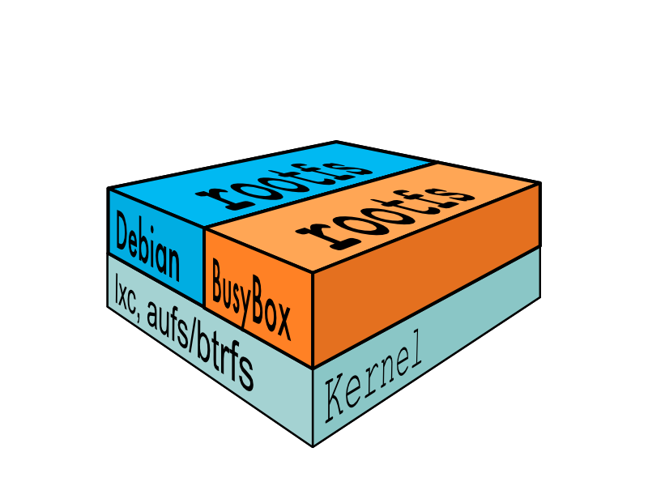

Andrea Tosatto
@_hilbert_
Docker 101Coding, testing, shipping with Docker
Inside the docker-engine(linux edition)
Heavyweight vs Lightweight Virtualization

LXC
LXC let you run a Linux system within another Linux system
A container is a group of processes put together in an isolated environment
(namespace)
“This is chroot on steroids”
Jérôme Petazzoni
Lightweight Virtualization LXC containers & AUFS - SCALE11x 2013, Los Angeles
cGroups
Expose a virtual file-system to
Limit,
Account,
Isolate
the resources used by a process.
AUFS
AUFS